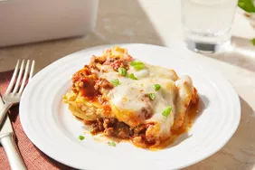

This guide will show you the most perfect and easy way to do this delicious cuisine. It consists all the necessary ingredients
and steps that you should follow to make the best lasagna. This guide was prepared by Google's Gemini AI.
Ingredients
- 1 pound ground beef
- 1/2 pound Italian sausage, casing removed
- 1 onion, chopped
- 2 cloves garlic, minced
- 1(28 ounce) can crushed tomatoes
- 1(15 ounce) can tomato sauce
- 1 teaspoon dried oregano
- 12 lasagna noodles
- 1 pound mozzarella chesse, shredded
- 1/2 cup grated Parmesan cheese
Steps
- Make the Meat Sauce
- Prepare the Cheese Mixture
- Cook the Cheese Mixture
- Cook the Lasagna Noodles
- Assemble the lasagna
- Bake the Lasagna
- Let it Rest
- enjoy!